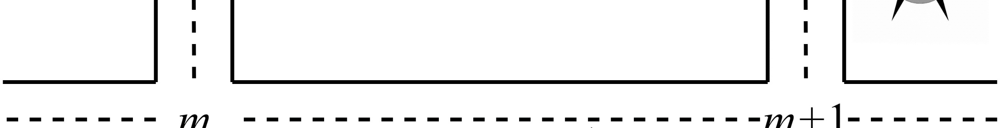

DreamerV3：用于交通信号控制超参数调整和性能
简单摘要
强化学习(RL)已发展为开发智能交通信号控制(TSC)策略的广泛研究技术。然而当前RL算法需要与环境进行大量交互才能学习有效策略，面对大规模路网时交互成本过高难以实用。DreamerV3算法通过学习环境的世界模型，能总结环境的通用动力学知识并通过想象训练机制大幅减少与真实环境的交互次数，在策略学习中展现出显著的数据效率优势。本文首次将DreamerV3应用于交通信号控制领域，使用SUMO仿真平台训练路网TSC模型，探索世界模型在TSC策略学习中的收益。在RL环境设计方面，状态表征和奖励函数均基于排队长度定义，动作空间也以管理排队长度为目标。通过在不同OD矩阵场景下对DreamerV3的训练比率和模型大小两个核心超参数进行系统调优与分析，发现选择较小模型尺寸并初步尝试若干中等训练比率可显著缩短超参数调优时间。该方法展现出良好的通用性：相同超参数配置可有效解决两类不同的TSC任务场景。
核心创新
首次将DreamerV3世界模型算法引入交通信号控制领域，利用其想象训练机制学习环境动力学模型，减少对真实环境的交互依赖。基于排队长度统一设计状态空间、奖励函数和动作空间，使RL智能体能够以队列管理为核心目标有效应对交叉口拥堵。通过SUMO仿真在不同OD矩阵场景下系统分析DreamerV3的训练比率和模型大小两个超参数对TSC性能的影响，得出小模型加中等训练比率的实用调优指导。验证了方法的场景通用性：相同超参数配置可有效泛化至不同的TSC任务场景。
技术细节
强化学习 (RL) 已发展成为一项广泛研究的技术，用于开发智能 TSC 策略。然而，当前的强化学习算法需要与环境进行过多的交互才能学习有效的策略，这使得它们对于大规模任务来说不切实际。在强化学习环境设计中，为了有效管理拥塞水平，状态函数和奖励函数都是基于队列长度定义的，并且动作被设计为有效管理队列长度。作者这样设计，是为了把这一节的输入、约束和输出关系讲清楚。
然而，当前的强化学习算法需要与环境进行过多的交互才能学习有效的策略，这使得它们对于大规模任务来说不切实际。最近，现代世界模型在模拟环境和视频游戏中显示出数据高效学习的巨大潜力[5-7]。此外，它是一种通用且可扩展的算法，优于以前的方法。这一步的作用，是把当前结果继续传给后面的模块或训练目标。

输入与表示
围绕 输入与表示，强化学习 (RL) 已发展成为一项广泛研究的技术，用于开发智能 TSC 策略。作者这样安排，是为了把这一环得到的表示、约束或中间结果继续传给后面的求解链路。
核心更新
围绕 核心更新，在强化学习环境设计中，为了有效管理拥塞水平，状态函数和奖励函数都是基于队列长度定义的，并且动作被设计为有效管理队列长度。作者这样安排，是为了把这一环得到的表示、约束或中间结果继续传给后面的求解链路。
训练约束
围绕 训练约束，然而，当前的强化学习算法需要与环境进行过多的交互才能学习有效的策略，这使得它们对于大规模任务来说不切实际。作者这样安排，是为了把这一环得到的表示、约束或中间结果继续传给后面的求解链路。
输出与推理
围绕 输出与推理，此外，它是一种通用且可扩展的算法，优于以前的方法。作者这样安排，是为了把这一环得到的表示、约束或中间结果继续传给后面的求解链路。
实验结论
强化学习 (RL) 已发展成为一项广泛研究的技术，用于开发智能 TSC 策略。然而，当前的强化学习算法需要与环境进行过多的交互才能学习有效的策略，这使得它们对于大规模任务来说不切实际。它总结了有关环境的一般动态知识，并能够根据过去的经验预测潜在行动的未来结果。
然而，当前的强化学习算法需要与环境进行过多的交互才能学习有效的策略，这使得它们对于大规模任务来说不切实际。最近，现代世界模型在模拟环境和视频游戏中显示出数据高效学习的巨大潜力[5-7]。
理解评价
如果把这篇论文放回问题背景里看，它真正的价值在于：然而，当前的强化学习算法需要与环境进行过多的交互才能学习有效的策略，这使得它们对于大规模任务来说不切实际。这说明作者不是只补一个局部模块，而是在重新组织问题该怎样被解决。
最能支撑这个判断的，还是实验给出的证据：它总结了有关环境的一般动态知识，并能够根据过去的经验预测潜在行动的未来结果，通过想象力训练减少与环境的相互作用。换句话说，这些设计并不只是概念上更完整，而是实实在在改变了最终结果。
当然，它离真正成熟的方案还有距离：当前方案的主要局限在于它仍然受到计算资源、输入质量或场景复杂度的约束，离真正大规模稳定部署还有距离。后续更值得继续推进的方向，是 未来继续提升效率、泛化能力以及在更复杂场景下的稳定性。